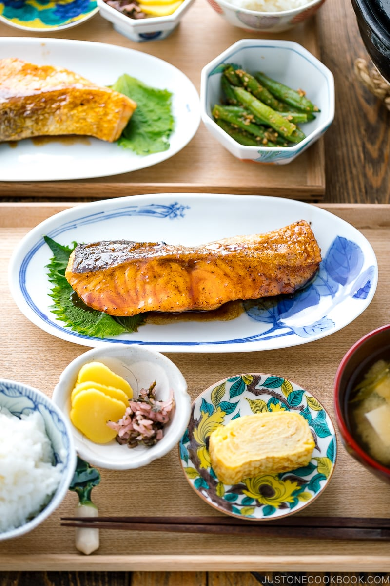
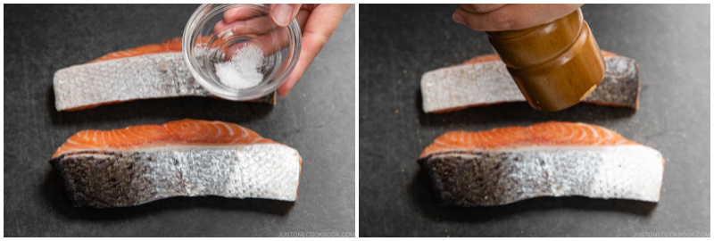
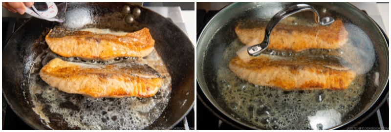

Teriyaki Salmon

Description
Teriyaki salmon is a popular Japanese dish featuring salmon fillets glazed with a sweet and savory teriyaki sauce. The sauce is made by simmering soy sauce, mirin (a sweet rice wine), sake, and sugar, creating a flavorful marinade and glaze. The salmon is typically pan-seared or grilled until crispy on the outside, then coated with the glossy teriyaki sauce, allowing it to caramelize slightly.
The dish is often served with steamed rice and vegetables, and sometimes garnished with sesame seeds or sliced green onions. Teriyaki salmon offers a balance of umami, sweetness, and richness, with the tender fish pairing perfectly with the bold, tangy sauce. It's a simple yet flavorful dish that’s easy to prepare and beloved in both Japan and internationally.
Ingredients
For the Teriyaki Sauce
- 1 Tbsp sake (or substitute Chinese rice wine, dry sherry, or water)
- 1 Tbsp mirin (or substitute 1 Tbsp sake/water + 1 tsp sugar)
- 2 Tbsp soy sauce
- 1 Tbsp sugar
For the Salmon
- 2 skin-on salmon fillets (¾ lb, 340 g; ¾ inch (2 cm) thick)
- ¼ tsp Diamond Crystal kosher salt
- ⅛ tsp freshly ground black pepper
- 1 Tbsp all-purpose flour (plain flour) (use cornstarch or potato starch for gluten-free)
- ½ Tbsp neutral oil (for cooking)
- 1 Tbsp unsalted butter (for cooking)
- 1 Tbsp sake (for steaming; can substitute Chinese rice wine, dry sherry, or water)
Steps
- Gather all the ingredients.
To Make the Teriyaki Sauce
- In a microwave-safe bowl, combine the ingredients for the teriyaki sauce: 1 Tbsp sake, 1 Tbsp mirin, 2 Tbsp soy sauce, and 1 Tbsp sugar. Mix well to dissolve the sugar.
- To help dissolve the sugar, you can microwave the mixture for 30 seconds.
To Prepare the Salmon
- Rinse 2 skin-on salmon fillets and pat dry. Season one side with half of the ¼ tsp Diamond Crystal kosher salt and half of the ⅛ tsp freshly ground black pepper. Tip: The salmon skin will hold the flesh together while cooking.

- Flip over and season the other side with the remaining salt and black pepper.
- Sprinkle half of the 1 Tbsp all-purpose flour (plain flour) on one side of the salmon and coat evenly. Tip: Coating the salmon with flour helps it retain its umami flavor and juiciness. It also helps absorb the sauce and thickens it.
- Flip over and sprinkle the rest of the flour on the other side. Gently press it to adhere and then remove the excess flour.
To Cook the Salmon
- Heat a frying pan over medium heat. When the pan is hot, add ½ Tbsp neutral oil and 1 Tbsp unsalted butter. Take care not to burn the butter. If the frying pan gets too hot, reduce the heat or remove it from the heat temporarily. Then, sear the skin of the salmon fillets: One at a time, press the skin against the hot frying pan‘s surface for 15 seconds before laying it skin side (or presentation side) down in the pan. Repeat with the remaining salmon. Tip: The presentation side (skin side) should go down into the pan first because you will get the best browning on the first side that hits the clean pan.
- Cook the salmon for 3 minutes, or until the bottom is golden brown, and then flip.
- To the pan, add 1 Tbsp sake—1 Tbsp for thin fillets and no more than 2 Tbsp for thicker fillets. Cover the pan with a lid and reduce the stove‘s heat to low. Steam the salmon for about 3–5 minutes, depending on the fillet thickness. If the sake has evaporated but the salmon isn‘t cooked through yet, add another tablespoon of sake and continue steaming.

- Cook the salmon until it registers an internal temperature of 125–130°F (52–54ºC) at the thickest part of the fillet (I use a Thermapen instant-read thermometer). Then, transfer the salmon to a tray or plate. These fillets were about ¾–1 inch (2–2.5 cm) in thickness and took roughly 4 minutes to cook. Tip: The USDA recommends cooking fish to an internal temperature of 145°F (63ºC); however, the residual heat will continue to cook the salmon, so you must remove the fillets at 125–130°F (52–54ºC) to avoid overcooking.
- Add the teriyaki sauce ingredients to the pan and increase the heat a bit. When the sauce starts to boil, add the salmon back to the pan.
- Spoon the sauce over the salmon. When the sauce thickens, turn off the heat. Transfer the salmon to a plate and drizzle the sauce on top.
To Serve
- Serve immediately. I like to serve my Teriyaki Salmon as part of a Japanese-style meal with Green Bean Gomaae (Sesame Dressing) or pan-seared asparagus, Tamagoyaki, Homemade Miso Soup, and Steamed Rice. Other side dishes that pair well with this savory-and-sweet salmon include Spinach with Sesame Miso Sauce, Japanese Potato Salad, Blanched Broccoli with Sesame Oil, Green Bean with Crumbled Tofu and Sesame, Brussels Sprouts with Bacon, and Roasted Cauliflower Kale Salad.
To Store
- You can keep the leftovers in an airtight container and store in the refrigerator for up to 3 days and in the freezer for 2 weeks.
Back to the list of recipes!